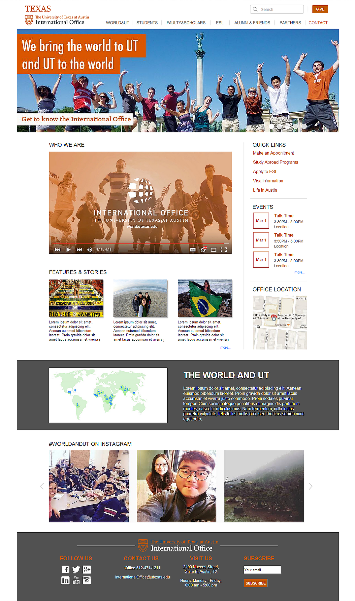

Website Redesign of UT International Office.


In the course Design Thinking, our class worked as a team to help the international office of UT-Austin redesign their website. Our goal was to strengthen brand recognition, improve its information architecture and enhance the user experience. The ideal product would be responsive, and we designed for self-service to allow users to perform tasks without external assistance. We also attempted to increase engagement by adding desirable features.
We reviewed the findings in Research Phase One and provided two versions of IA redesign (used-based and task-based). The research team would go through further usability testing on these two alternatives for comparison in efficiency.


Our team created low fidelity wireframes for two versions of IA. The one to the left is the IA version I created in Balsamiq. We compared our designs and discussed together the best way to finalize the output.
The usability team conducted the tree test again on the two versions of IA (task-based & user-based), using the same tasks designed in Research phase 1 that tested the draft International Office provided. It turns out that:
My team was responsible for the design of the International Office homepage, and other class groups were redesigning the unit landing pages.
